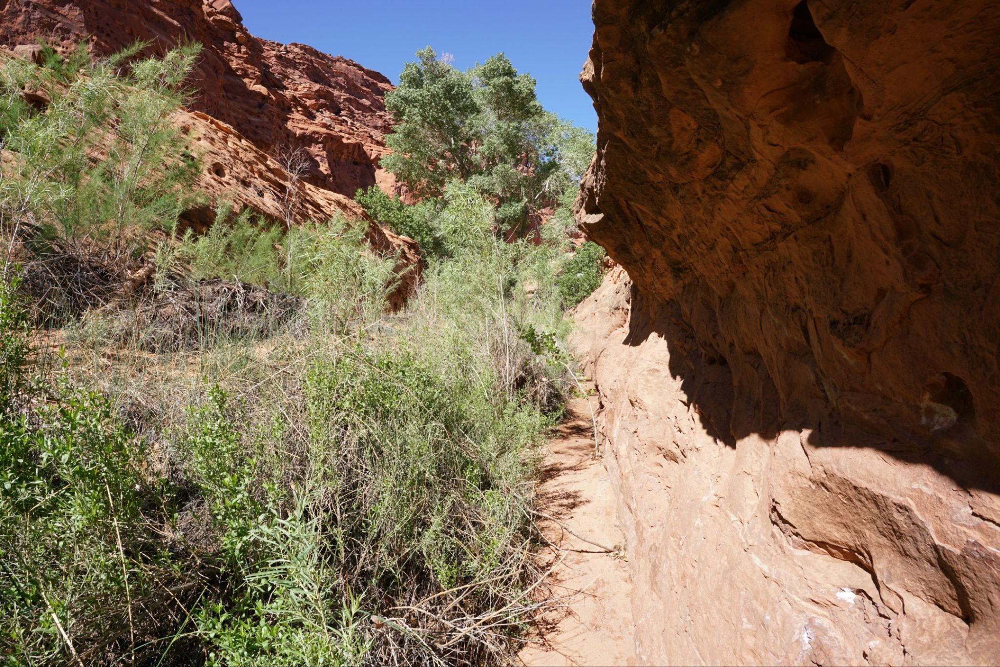
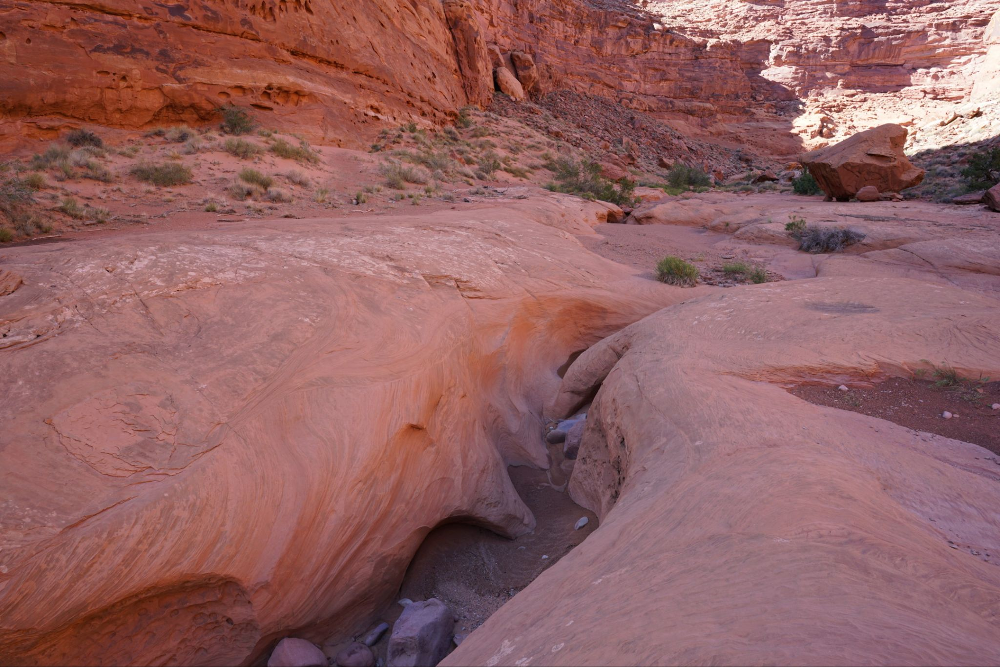
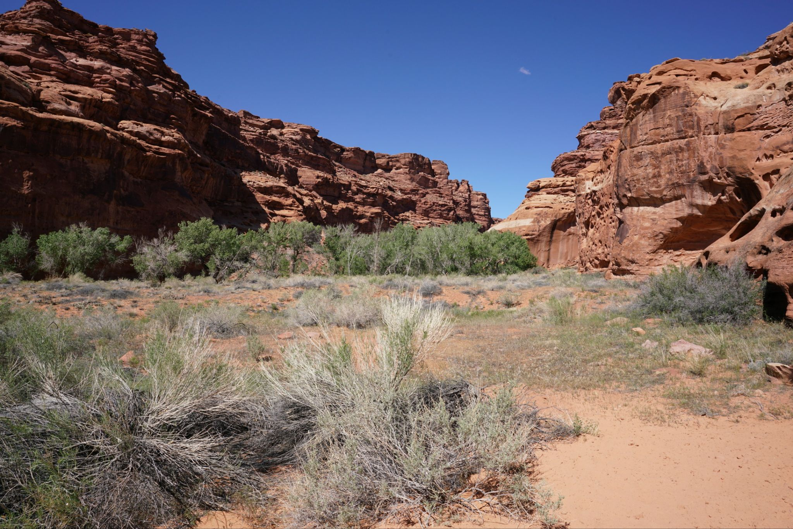
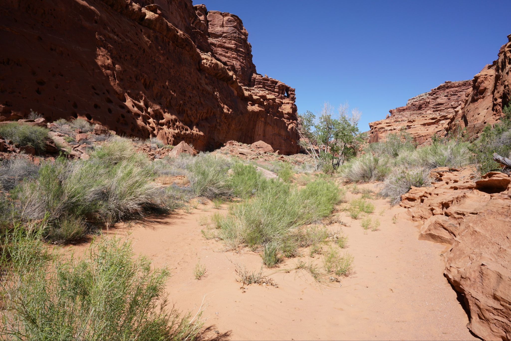
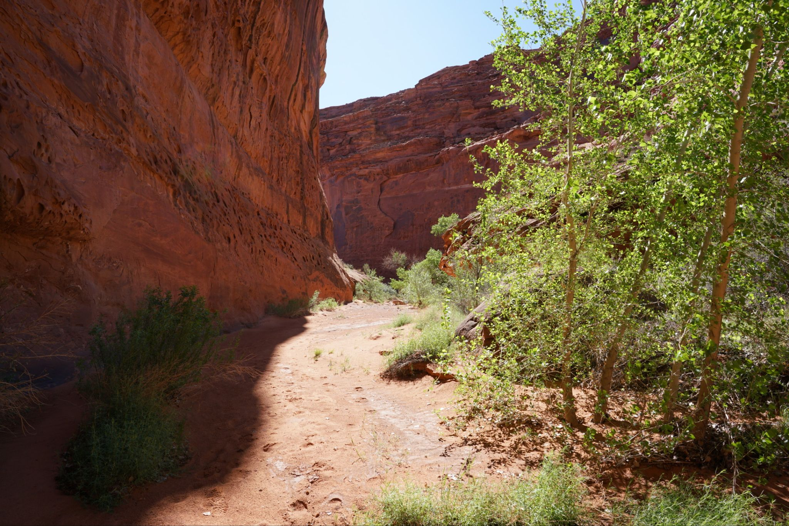
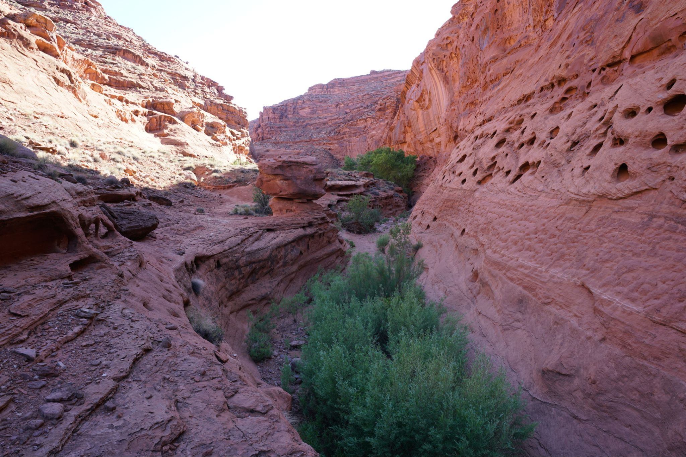
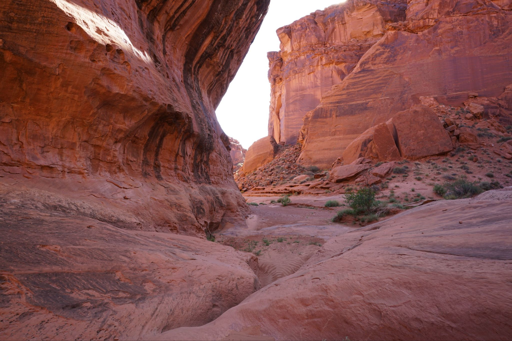
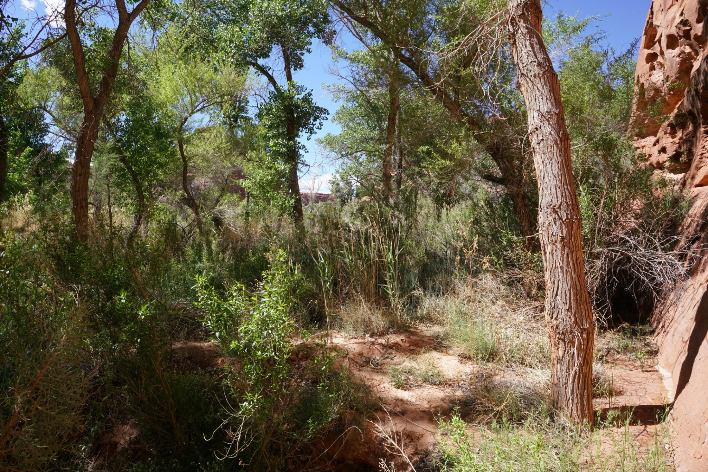

2026-04-15 - Stair Canyon
There isn't much information to be found on Stair Canyon but the one or two sources I found said it has moderately good narrows and is one of the better canyons in the North wash area. Access to the canyon is pretty easy as one just needs to pull off the highway, park, and hike in from there. I hiked in almost 4 miles or about 8 roundtrip but didn't see much of any narrows and found the canyon to be mediocre at best. There isn't a trail in the canyon but it is narrow enough and intuitive to walk in. Most of the hike is through sand. The first .5 mile of the hike was probably the least enjoyable as there is thick vegetation and bushwhacking. After that part the vegetation mostly abates and the hike continues, meandering up the canyon. There are a couple sections of very minor narrows, maybe 50 ft long and only 3 to 5 feet in height, which are all easily bypassed by ledges on the sides. I kept walking along weaving through the canyon bends with eyes ahead hoping there would be better narrows, but there just werent any, so I eventually turned back. The canyon was okay at best and what it lacked in scenery was made up for by the peacefulness. There was nobody else and there didn't seem to be any recent footprints. Time may be better spent exploring the other many cool places nearby.







